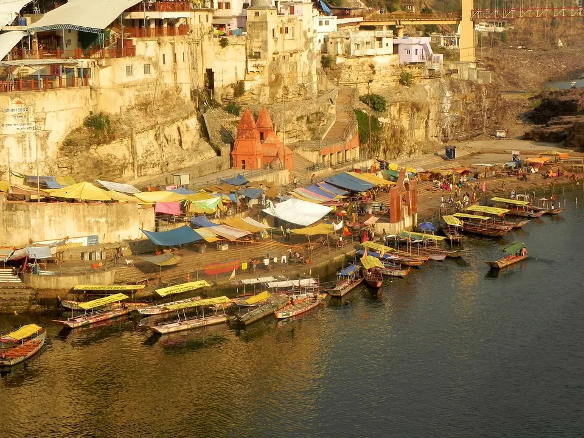
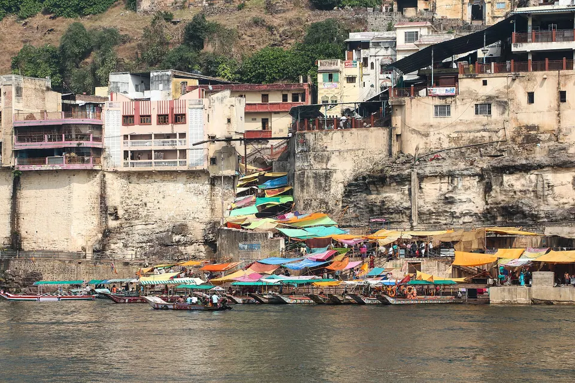

Ujjain and Omkareshwar in 3 Days: Two Jyotirlingas, One Calm Trip

For Ujjain and Omkareshwar, plan three days and base yourself in Ujjain for all three nights. Spend day 1 and day 3 on Mahakaleshwar and the city, and use day 2 for a single, unhurried round trip to Omkareshwar, which is roughly 140 km away by road.
Many families ask us whether they should pack their bags and move to Omkareshwar for a night. Having hosted pilgrim families for years, we usually suggest not to, and the reasons are below. This plan keeps one comfortable bed, one kitchen and one routine for the whole trip, which matters most when grandparents are travelling with you.
Where to base yourself: Ujjain, Omkareshwar or Indore?
The honest answer depends on who is travelling. Here is how we think about it.
Base in Ujjain (our suggestion for most families)
Ujjain has the longer list of things to do: Mahakaleshwar, the Mahakal Lok corridor, Kal Bhairav, Harsiddhi and the Shipra ghats. Omkareshwar can be done in one day. You also avoid packing and unpacking, and you return each evening to your own kitchen for a simple meal.
Spend one night in Omkareshwar
This suits younger, fit travellers who want the evening aarti and the quiet of the river. Thomas Cook's guide says options there include temple-run facilities, dharamshalas, hotels and guesthouses, and that staying in the town is convenient for darshan. We do not run a property there, so we cannot speak for any of them. Book in advance and check what is actually included.
Base in Indore
Indore has the wider choice of hotels and, according to the same guide, suits a longer Madhya Pradesh circuit. It is a sensible base if you are visiting other places too. For a pilgrimage focused on two jyotirlingas, it adds travel time to Ujjain every day.
Day 1: Arrive in Ujjain and walk Mahakal Lok
Check-in at our villas is from 10:30 AM, so a morning train gives you a gentle start. Rest in the afternoon, make tea in the kitchen, and keep the first day light.

In the evening, walk through the corridor. Our Mahakal Lok visit guide covers timings and what to see, and MP Tourism describes the corridor beside the temple. A first evening there also helps you learn the lanes before your darshan day.
Day 2: Omkareshwar, in one unhurried day trip
Start early, around 6 AM if you can. Thomas Cook gives about 140 km and 3.5 to 4 hours by road from Ujjain, depending on traffic and route. Traffic changes this, so use a live map on the day.
For a private car, our indicative price for an SUV round trip from Ujjain to Omkareshwar is ₹5,500 (message us for a confirmed quote). A combined Maheshwar and Omkareshwar trip is indicatively ₹8,500, but we would not add Maheshwar on the same day with elders. Our travel page lists the other transport options, and our Omkareshwar guide goes deeper into the temple.

Omkareshwar and Mamleshwar
Omkareshwar stands on an island in the Narmada. Mamleshwar, also called Amareshwar, is on the southern bank, directly opposite, according to Trawell. Hindu Tone notes that local tradition holds the pilgrimage complete only after visiting both shrines, and that you can cross by footbridge or by boat.
Darshan timings
Timings differ between websites. Thomas Cook lists darshan roughly from 5:00 AM to 10:30 PM with breaks for rituals, and evening darshan from 4:15 PM to 9:30 PM. Other sites list slightly different hours, and last-minute changes happen, so check the temple trust's official arrangements before you leave. Carry ID, since the same guide says it is needed to validate an online darshan booking.
The parikrama
The Omkar Parvat parikrama around Mandhata Island is about 7 km, according to Thomas Cook, which cites the official temple site, with stops such as Gauri Somnath and Sangam Ghat. Thomas Cook suggests allowing 2.5 to 4 hours. It involves steps and uneven ground, so treat it as optional for elders.
Plan to head back by mid-afternoon so you are on the road before dark. Hindu Tone says October to March is the most comfortable season.
Day 3: Mahakaleshwar darshan and the old city
Use this day for the first jyotirlinga. If you want Bhasma Aarti, book the pass well ahead and read our Bhasma Aarti booking guide. The shuttle takes in-house guests to the temple gate, and our caretaker explains the booking steps on your arrival evening. If 4 AM is too early for your parents, choose a regular morning or evening darshan instead, and check current timings on the official site. Our winter aarti timings post has a summary.
In the afternoon, if energy allows, visit Kal Bhairav, and take a quiet moment at the Shipra ghats. Pack the next morning's departure the evening before.
Variations on the plan
- Only two days: Do Mahakaleshwar on the morning of day 1 and go to Omkareshwar on day 2, but keep Mahakal Lok for the next visit. See our Ujjain in winter post for what to carry.
- With a toddler or a very senior parent: keep Omkareshwar to darshan only, without the parikrama.
- Four days: add a slow day in Ujjain for temples at your own pace, or give Omkareshwar a night of its own.
Where to stay for this trip
All five of our villas are within 2 km of Mahakaleshwar Jyotirlinga, and in-house guests get a complimentary Mahakal shuttle (up to 5 guests per trip). Returning to the same room after the Omkareshwar road is the best part of this plan.
Rudrangan Suites


Opened in 2026, Rudrangan Suites has designer finishes and garden seating. It has 3 bedrooms, sleeps 6 and starts from ₹5,200 per night. It is air-conditioned, wheelchair friendly, has a lift and welcomes pets. Its kitchen has an induction cooktop, which is handy for tea before a 6 AM start. Check-in is from 10:30 AM and check-out is 9:30 AM, with a later check-out possible on request.
For other groups: Divinestay (3 bedrooms, sleeps 8, from ₹5,500) suits three generations, and AP Suite (2 bedrooms, sleeps 4, from ₹4,200) suits couples. See them all on our villas page.
Frequently asked questions
Is three days enough for Ujjain and Omkareshwar?
Yes, for a relaxed visit. Use one day for arrival and Mahakal Lok, one for Omkareshwar and one for Mahakaleshwar darshan. Families with elders or small children may prefer a fourth day so that nothing feels rushed, and Omkareshwar is best kept to its own day.
Should we stay overnight in Omkareshwar?
It is optional. A single day trip from Ujjain works well, and you return to the same room. An overnight stay suits those who want the evening aarti and a quieter river. Options include dharamshalas, hotels and guesthouses, and we suggest booking in advance.
How far is Omkareshwar from Ujjain?
Thomas Cook gives roughly 140 km and 3.5 to 4 hours by road. Traffic, the route and festival days change this, so look at a live map on the morning you leave.
Do we need to visit Mamleshwar as well?
Local tradition, as Hindu Tone notes, holds that the pilgrimage is complete only after both Omkareshwar and Mamleshwar. Mamleshwar is on the southern bank, across the river, and you can cross by footbridge or boat. It is your choice, but many families include it.
What is the best season for this trip?
Hindu Tone calls October to March the most comfortable period. Winter mornings in Ujjain are cool, so carry a shawl. It also advises avoiding Maha Shivaratri and Shravan Mondays with elderly parents or small children, as it is much more crowded.
Questions on dates or group size? You can also reach us from our contact page. May both darshans be calm and unhurried for you.
— Apoorv, Founder, AP Villas & Resorts
Sources
- Thomas Cook: Omkareshwar Jyotirlinga temple guide
- Hindu Tone: Omkareshwar Jyotirlinga guide
- Trawell: Sri Mamleshwar Jyotirlinga
- MP Tourism: Mahakal Lok corridor
- Shri Mahakaleshwar temple (official portal)
Timings, prices and dates change, especially on festival days. Please verify before you travel with the official temple or government site.